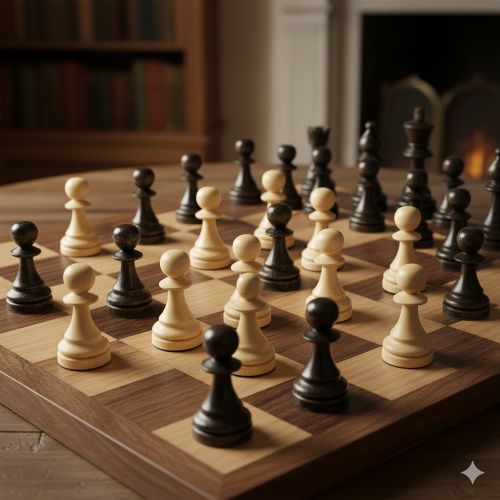

Chess is divided into several main areas, and improving in each one helps players develop a stronger
understanding of the game. Below is an overview of the most important sections every chess player studies. Here is a guideline of how the pieces work.
Piece information

Pawns in action, even a simple pawn can change the fate of the entire game.
Main Areas of Chess Study
Openings
The opening is the first part of the game. Its purpose is to develop your pieces, control the center, and prepare for the middle game.
Opening Principles
Control the center
Develop knights and bishops early
Castle for safety
Simple Beginner Openings
Italian Game
Queens Gambit
Middle Game
The middle game begins once your pieces are developed. This is where strategy, planning, and positioning matter most.
Main Concepts
Piece activity
Weak squares
King safety
Small Strategies
Creating threats
Using open files
Endgame
The endgame happens when only a few pieces remain. Technique becomes more important than tactics.
Essential Endgames
King and pawn vs king
Rook and king vs king
Endgame Ideas
Opposition
Promoting pawns
Tactics
Tactics are short-term combinations used to win material or deliver checkmate. They are critical for improving quickly.
Common Tactics
Forks
Pins
Discovered attacks
Why Tactics Matter
Most games under beginner and intermediate levels are decided by tactical mistakes rather than strategy.
How to Improve Your Chess
Small habits help players get better over time. Consistency is more important than long study sessions.
Helpful Chess Study Habits
Method
How It Helps
Practice Tactics
Improves pattern recognition and sharp decision-making.
Analyze Your Games
Shows mistakes and missed opportunities.
Play Longer Time Controls
Builds strategic thinking and patience.
Did You Know?
Most grandmasters read thousands of positions and puzzles in their early years of study.